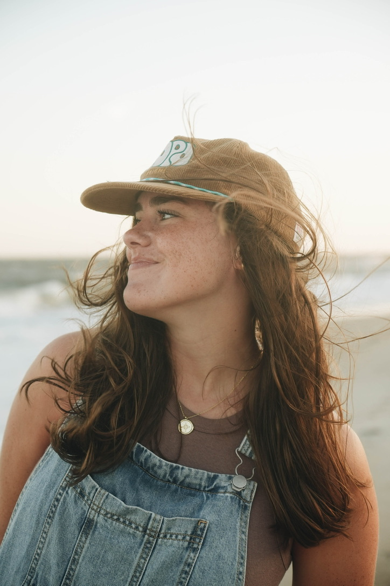

My name is Allison Rikard and I am a School of Communications major at Elon University in North Carolina. I have a love for storytelling through photography and videography, particularly in the areas of sports and weddings. I passionately bring to life the large victories & unnoticed details through visual storytelling. I seek life & the fullness of joy every moment offers. there is always joy to be found in the midst of the wins, losses, and adventures along the way. whether through photo or video, people's stories are meant to be told & that is the most beautiful thing I get to be a part of. My full porfolio is accessed at allisonrikard.com!
I am currently studying at Elon University where I am learning about various aspects of communication and media. I am excited to continue my education and eventually pursue my passion in the field of Communications.
In my free time, I enjoy exploring new places, trying new foods, and spending time with friends. I also love to go to the mountains, specifically as an NC local, to Stone Mountain State Park. A lot of memories of hiking, building fires, and playing games with my siblings were made there. These were times that founded my deep love for nature and the stories it brings to life.